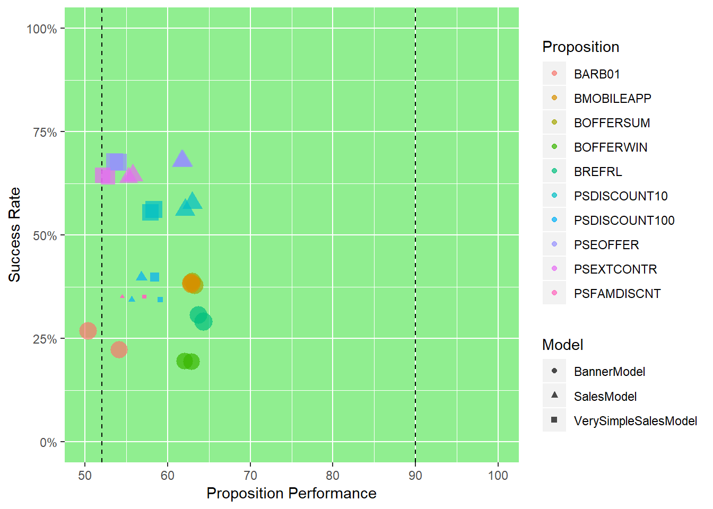
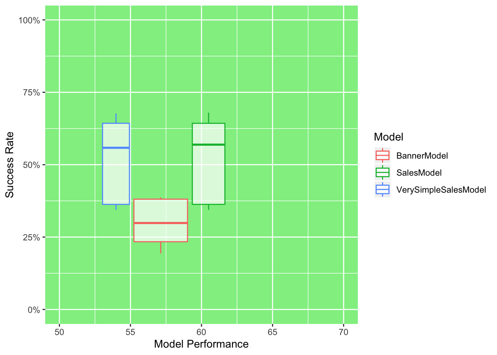
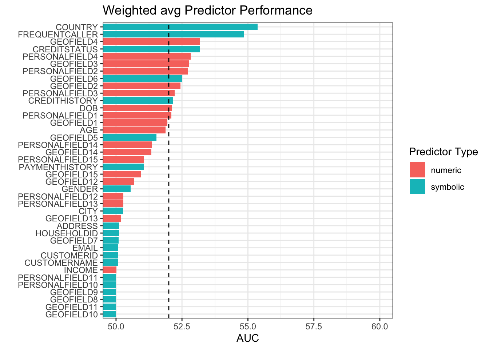
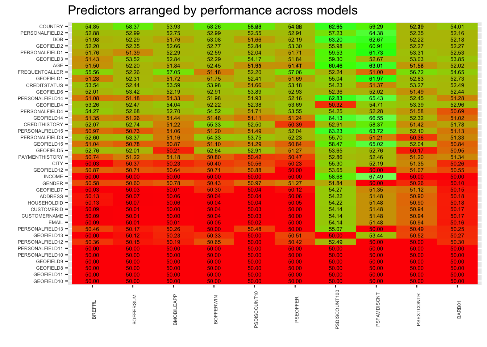
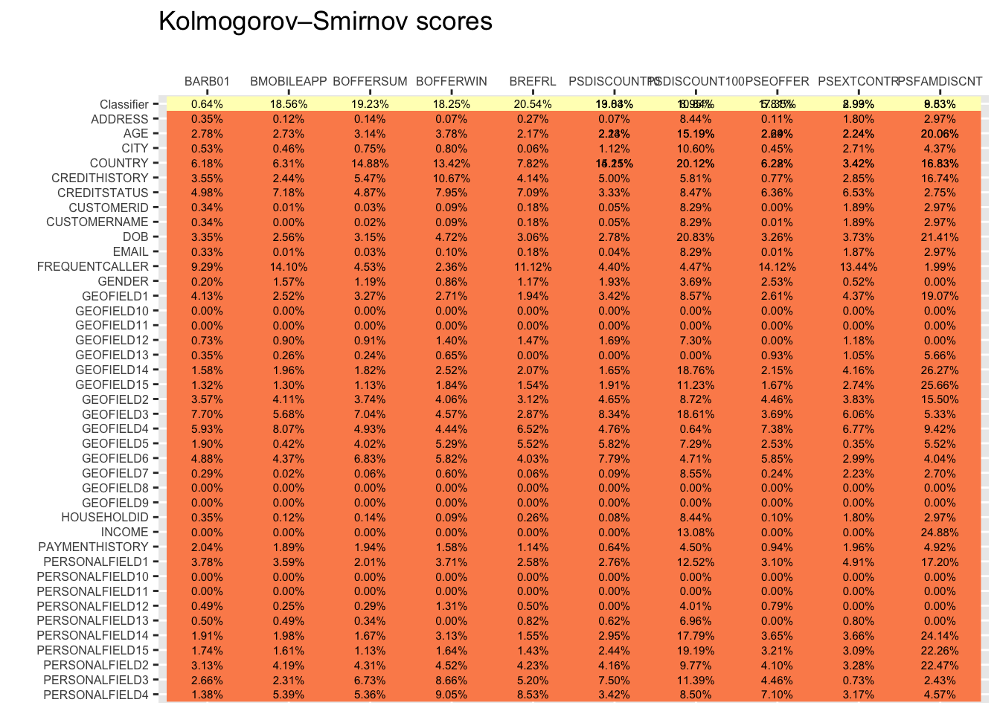
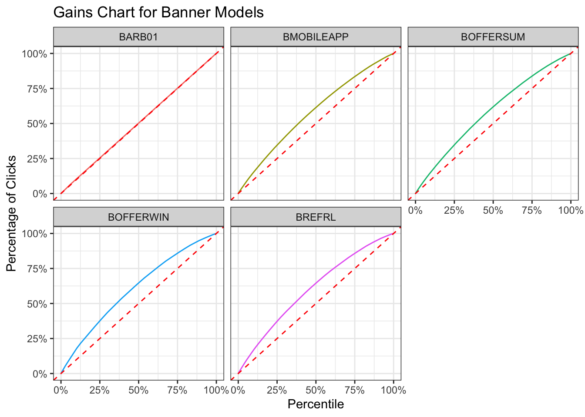
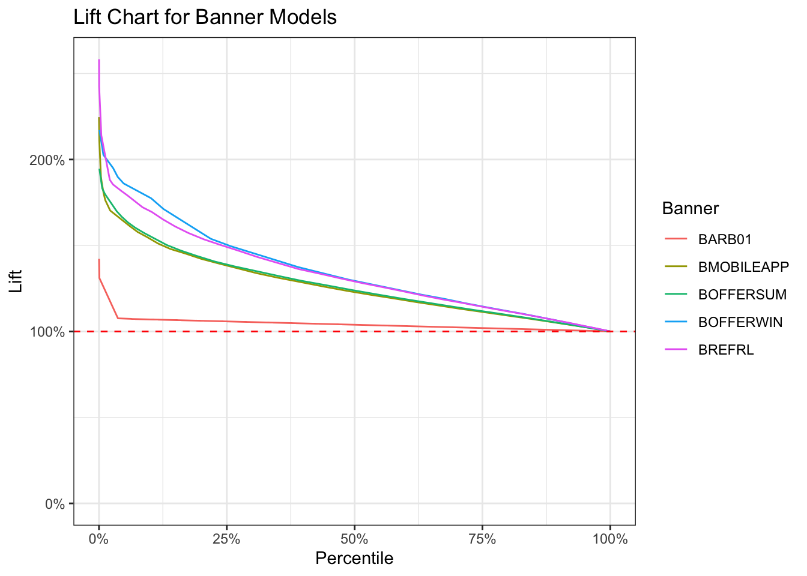

adm-reporting.RmdThe ADM Datamart is an open database schema where the ADM models and all predictors are copied into. The standard ADM reports both in Analytics Center as well as in the Report Browser (Adaptive category) work off this schema.
Since the schema is open we can easily use it to create our own reports and support measurements and plots not available in the OOTB reporting in Pega.
Let’s first load the data. An example export is provided with the package. Ways to load your own data from the database or from a dataset export will be described later.
library(cdhtools)
data(admdatamart_models)
data(admdatamart_binning)To load your own data, export the datasets from Pega, download them to your filesystem and let the cdhtools library import it. In order to be able to process the data universally we also make sure to make the names lower case and make sure the types are as expected by the snippets that follow below. This would also be a good place to zoom in to specific models relevant to your application.
admdatamart_models <- readDSExport("Data-Decision-ADM-ModelSnapshot", "~/Downloads")
setnames(admdatamart_models, tolower(names(admdatamart_models))) # for compatibility with database approach
admdatamart_models[, pyperformance := as.numeric(pyperformance)]
admdatamart_binning <- readDSExport("Data-Decision-ADM-PredictorBinningSnapshot", "~/Downloads")
setnames(admdatamart_binning, tolower(names(admdatamart_binning))) # for compatibility with database approach
admdatamart_binning[, pyperformance := as.numeric(pyperformance)]
# Filter models relevant to our application
admdatamart_models <- admdatamart_models[pyconfigurationname %in% c("SalesModel", "BannerModel")]With the data loaded, we can start with a plot similar to what the Analytics Center provides OOTB, however here we can easily include multiple models.
library(ggplot2)
library(scales)
library(tidyverse)
library(data.table)
ggplot(admdatamart_models %>%
mutate(Performance = 100*pyperformance,
Responses = pypositives+pynegatives,
AcceptRate = pypositives/(pypositives+pynegatives)),
aes(Performance, AcceptRate, colour=pyname, shape=pyconfigurationname, size=log(Responses)))+
geom_vline(xintercept=c(52,90), linetype="dashed")+
geom_point(alpha=0.7) +
guides(colour=guide_legend(title="Proposition"),
shape=guide_legend(title="Model"),
size=FALSE)+
scale_x_continuous(limits = c(50, 100), name = "Proposition Performance") +
scale_y_continuous(limits = c(0, 1), name = "Success Rate", labels = scales::percent) +
theme(panel.background = element_rect(fill='lightgreen'))
If we group by model instead of proposition, we can see the spread of success rate and performance for all the propositions of one model. In this example, it’s immediately obvious that the Banners have a much lower success rate than the Sales propositions, and also that the Very Simple model has a much lower performance than the (presumably not so simple) Sales model.
ggplot(admdatamart_models %>%
mutate(Performance = 100*pyperformance,
Responses = pypositives+pynegatives,
AcceptRate = pypositives/(pypositives+pynegatives)),
aes(Performance, AcceptRate, colour=pyconfigurationname))+
geom_boxplot(alpha=0.7, outlier.shape=8,
outlier.size=6) +
guides(colour=guide_legend(title="Model"))+
scale_x_continuous(limits = c(50, 70), name = "Model Performance") +
scale_y_continuous(limits = c(0, 1), name = "Success Rate", labels = scales::percent) +
theme(panel.background = element_rect(fill='lightgreen'))
The below plot shows the predictor performance across the selected models. It is similar to one of the reports in the set of out of the box reports available through the Report Browser (“Adaptive” category), however that one does not do a weighted average of the performance. This one does, so gives a more accurate picture.
ggplot(admdatamart_binning %>% filter(pyentrytype != "Classifier") %>%
group_by(pymodelid, pypredictorname, pytype) %>%
summarise(pyperformance = first(pyperformance),
evidence = sum(pybinpositives+pybinnegatives)) %>%
arrange(pypredictorname) %>%
group_by(pypredictorname, pytype) %>%
summarise(weightedperformance = sum(evidence*pyperformance)/sum(evidence)) %>%
arrange(weightedperformance),
aes(factor(pypredictorname, levels=unique(pypredictorname)), 100*weightedperformance, fill=pytype)) +
geom_bar(stat="identity")+
guides(fill=guide_legend(title="Predictor Type"))+
coord_flip()+
theme_bw()+
xlab("")+
ggtitle("Weighted avg Predictor Performance")+
scale_y_continuous(limits=c(50,60),oob = rescale_none, name = "AUC")+
geom_hline(yintercept=c(52), linetype="dashed")
You could also show the predictor performance in one plot across all predictors for all the selected models. Also arranging by performance in both dimensions gives a quick visual clue of which predictors and which models need attention.
performanceSummary <-
left_join(admdatamart_binning[, .(auc = first(pyperformance)), by=c("pymodelid", "pysnapshottime", "pypredictorname")],
admdatamart_models,
by = c("pymodelid","pysnapshottime"))
# maps AUC 0.5 .. 1.0 to a measure of goodness 0 .. 1 just for viz
myGoodness <- function(x)
{
minOK <- 0.52
maxOK <- 0.85
midPt <- 0.3
return (ifelse(x < minOK, midPt*(x-0.5)/(minOK-0.5),
ifelse(x < maxOK, midPt+(1-midPt)*(x-minOK)/(maxOK-minOK),
1 - (x-maxOK)/(1-maxOK))))
}
## Plot of AUC of predictors x models
meanByModel <- group_by(filter(performanceSummary, pypredictorname=="Classifier"), pyname) %>%
dplyr::summarise(goodness = mean(myGoodness(auc), na.rm=T),
auc = mean(auc, na.rm=T)) %>%
arrange(desc(goodness))
meanByPredictor <- group_by(performanceSummary, pypredictorname) %>%
dplyr::summarise(goodness = mean(myGoodness(auc), na.rm=T),
auc = mean(auc, na.rm=T)) %>%
arrange(goodness)
ggplot(filter(performanceSummary, pypredictorname!="Classifier"),
aes(x=factor(pyname, levels=meanByModel$pyname),
y=factor(pypredictorname,levels=setdiff(meanByPredictor$pypredictorname, "Classifier"))))+
geom_raster(aes(fill=myGoodness(auc)))+
scale_fill_gradient2(low="red", mid="green", high="white", midpoint=0.5) +
labs(x="",y="",title="Predictors arranged by performance across models")+
geom_text(aes(label=sprintf("%.2f",100*auc)), size=2)+
theme(axis.text.x = element_text(angle = 90, size = 5), axis.text.y = element_text(size = 5))+
guides(fill=F)
With all the data available in the datamart, you are not restricted to just reporting. Using the binning information for all of the predictors, you could, for example, calculate the KS score of the models. The KS (Kolmogorov–Smirnov) score is related to the AUC that we use by default, but instead of the areas under the ROC curve, it gives the maximum separation between the true positive and false positive rate.
The below snippet calculates the KS score for all predictors of all propositions and shows them next to AUC reported by ADM.
admdatamart_binning[ , propensity := pybinpositives/(pybinpositives+pybinnegatives)]
setorder(admdatamart_binning,propensity)
myKS <- function(binning)
{
Goods <- cumsum(binning$pybinnegatives) / sum(binning$pybinnegatives)
Bads <- cumsum(binning$pybinpositives) / sum(binning$pybinpositives)
ks <- (max(Goods - Bads))
return(ifelse(is.na(ks),0,ks))
}
performanceSummary <-
left_join(admdatamart_binning[, .(ks = myKS(.SD),
auc = first(pyperformance)),
by=c("pymodelid", "pysnapshottime", "pypredictorname","pyentrytype")],
admdatamart_models,
by = c("pymodelid","pysnapshottime"))
## Show KS numbers
ggplot(performanceSummary,
aes(pyname, factor(pypredictorname,
levels=c(setdiff(sort(performanceSummary$pypredictorname,decreasing = T), "Classifier"),"Classifier"))))+
geom_raster(aes(fill=(pyentrytype=="Classifier")))+
labs(x="",y="",title="Kolmogorov–Smirnov scores")+
geom_text(aes(label=sprintf("%.2f%%",100*ks)), size=2)+
scale_fill_brewer(palette="Spectral")+
guides(fill=F)+
theme(axis.text.x = element_text(size=6),
axis.text.y = element_text(size=6))+
scale_x_discrete(position = "top")
The predictor data for the model classifiers can also be used to create gains or lift charts, as an alternative to the bin-oriented propensity plot that is available in the Analytics Center.
For example, Gains charts for the Banner models:
classifierdata <- admdatamart_binning[pyentrytype=="Classifier" &
pymodelid %in% admdatamart_models[pyconfigurationname=="BannerModel" &
pysnapshottime==max(pysnapshottime)]$pymodelid,
c("pybinindex", "pybinnegatives", "pybinpositives", "propensity", "pylift", "pymodelid")]
setorder(classifierdata,-pybinindex)
classifierdata[,cumRelativeVolume := cumsum((pybinnegatives+pybinpositives)/sum(pybinnegatives+pybinpositives)), by=pymodelid]
classifierdata[,cumRelativePositives := cumsum((pybinpositives)/sum(pybinpositives)), by=pymodelid]
classifierdata[,Banner := admdatamart_models$pyname[admdatamart_models$pymodelid == pymodelid][1], by=pymodelid]
ggplot(classifierdata, aes(cumRelativeVolume, cumRelativePositives, color=Banner)) + geom_line() +
geom_abline(slope = 1, intercept = 0, color="red", linetype="dashed") +
scale_x_continuous(limits = c(0, 1), name = "Percentile", labels = scales::percent) +
scale_y_continuous(limits = c(0, 1), name = "Percentage of Clicks", labels = scales::percent) +
theme_bw() + guides(color=F) +
facet_wrap(~Banner)+
ggtitle("Gains Chart for Banner Models")
Or a Lift chart for the same models:
classifierdata[,lift := (cumsum(pybinpositives)/cumsum(pybinnegatives+pybinpositives)) / (sum(pybinpositives)/sum(pybinnegatives+pybinpositives)), by=pymodelid]
ggplot(classifierdata, aes(cumRelativeVolume, lift, color=Banner)) + geom_line() +
geom_hline(yintercept = 1, color="red", linetype="dashed") +
scale_x_continuous(limits = c(0, 1), name = "Percentile", labels = scales::percent) +
scale_y_continuous(limits = c(0, NA), name = "Lift", labels = scales::percent) +
theme_bw() +
ggtitle("Lift Chart for Banner Models")